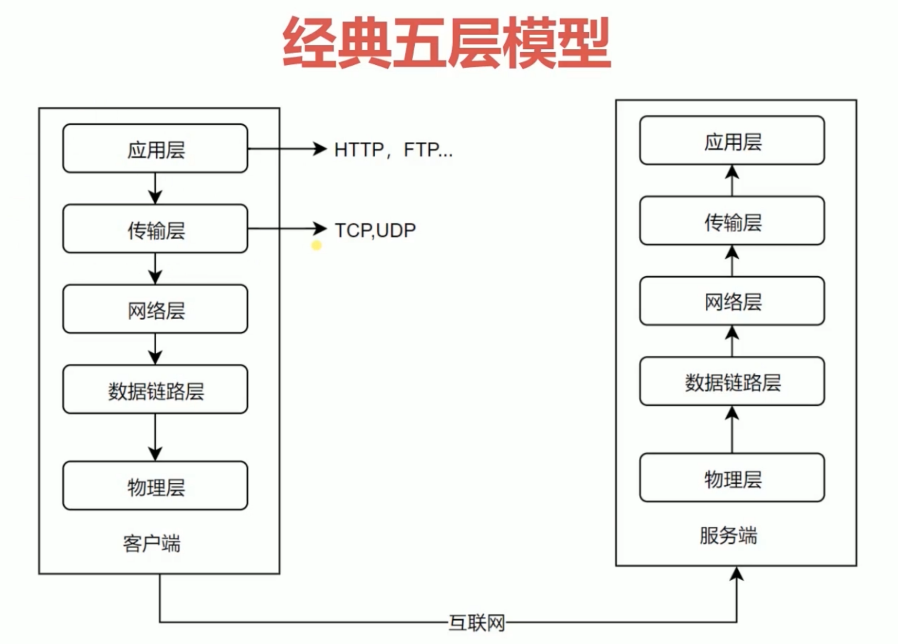

在详细讲解具体http协议之前， 我们会看一些基础的网络通讯相关的知识概念。通过理解基本的网络通讯相关的知识能够让我们对网络协议整体上面的一些简单的认识。这样的话有利于我们在之后更好的去理解http协议与其他的一些内容。
在网络协议当中，我们一般在说整个网络信息传输的过程的时候都会套用一个经典的五层模型的。五层模型分为应用层、传输层、网络城、数据链路层和物理层。这个在每一台电脑上、每台服务器上他都是有这么一个相应的层级关系来维护我们整个网络数据传输的一个过程。所以在你自己的电脑上 在一台远程的物理服务器上 可能上面放着一个外部服务器来提供一个网站的服务。 那么这些经典的计算机模型都会有这么一个网络的过程。所以你自己的计算机也是可以作为一台web服务器来提供网络服务的。
对于web开发， 我们的http协议是在应用层面去实现。但是呢它要基于传输层里面的一个非常重要的一个协议，叫tcpip协议。这个协议是现在网络模型当中最最最重要的一个协议，在我们应用的过程当中， 比如说 我们创建一个app的服务或者ftp服务或者是email的服务，那么这些服务他们都是基于tcpip协议实现的。
所以, tcpip协议在后面有些地方我们会讲解到因为他会涉及到一些像http求情的一个性能或者是它过程的一个消耗。这些内容都会涉及到tcpip协议相关的东西。那么下面这三层，因为我们主要做的是web服务,所以基本上不会去碰到相关的东西。我们顶多顶多会稍微涉及一些tcpip协议。
接下来，了解下下三层主要去做一些事情。
1. 下三层
物理层 主要的作用就是定义物理设备如何去传输数据。简单的说物理层是什么呢，就是我们电脑的硬件 我们的网卡端口网线，以及我们网线连出去之后有一套光缆来为我们把数据传输到互联网可能经过好几千公里呢，这种情况下，把数据传输到对面的一个服务器上面。所以这些物理的内容是必须要有的，没有物理 我们的软件是没有办法去使用的。所以呢，物理层就是这些硬件设备相关的东西。
数据链路层 是在通信的实体之间建立数据链路连接。就是我们最基本的电脑的传输数据，就是0101这些东西。
数据链路层 是为数据节点之间的传输创建一个逻辑链路，那么逻辑电路图会包含一些 比如说我们从我的电脑要去访问百度的服务器，那么我们如何去寻找百度的服务器他所在的地址，它就是一个逻辑关系。那么这个关系是在网络层为我们创建了的。
这三层大家如果不是特别的能理解那没人没有什么关系，因为这些会相对非常的底层，如果大家有兴趣的话可以自己去学，如果没有什么兴趣，也不一定要非常了解才能做好一个web应用。因为我们基本上是在http协议相关的里面进行一些操作，最多偶尔会学习一些TCP相关的一些东西来提高我们使用http协议的时候技能相关的一些内容。
2. 传输层
我们来讲一下什么是传输层，传输层主要有两个协议：tcpip协议 和 upd协议。在更多的情况下我们使用的基本上是tcpid协议，因为他是一个更可靠的帮我们去传输数据的协议。
传输层为我们提供了 端到端（end-to-end） 的一个服务, 这个服务是什么概念呢! 就是我们建立起来从我们自己的电脑到百度的服务器之间的这么一个连接之后，他们两端如何去传输一个数据的 传输数据的方式都是在这一层进行一个定义的。
我们传输的数据有可能很小有可能很大，那么如果传输的数据很大。一次性我们不能把这么大的数据传输过去，那么我们要分包、要分片。这些分片之后数据传输到那边之后要进行一个组装，组装的过程就是这些协议的定义，他如何去组装如何去传输都是在传输层进行一个定义的。
传输层向高层屏蔽了下层数据通信的细节。 什么概念呢, 因为http协议是实现在tcpip协议的基础上的。http协议要传输一个数据， 我们只需要非常简单的 比如说在浏览器里面输入url它就会自动去发送相关的一些数据到服务器端，然后服务器能够解析这些数据返回给我们的浏览器，最好把页面显示出来。我们输入url这个过程其实涉及到了一系列的数据的拼装与传输，那么这个过程我们作为浏览器端、我们作为用户或者说我们作为网页的开发者不需要知道它里面到底是怎么去分片、它怎么去跟服务器创建一个链接的关系。这些内容我们是完全不需要知道的，因为这是传输层已经帮我们封装掉了。
还有就是比如说我们创建一个ajax请求, 那么ajax请求也是一个http的请求，我们使用ajax的post方式去传输一些数据，那么这个数据如果比较大的时候，他也是一次性的传输不完的，那么它如何去进行一个传输？如何能够可靠地把我们想要的信息传输给服务器？服务器返回的信息又如何可靠的被我们拿到？那么这个过程都是传输层这边他已经帮我们实现的，所以我们使用httpt协议时不需要关心这些的。
虽然说不需要关心，但是如果你能更好的去理解传输层传输的过程，那这个时候可能对于在某一些细节上面去实现一个性能更高的，而且对协议的使用方式，可能会是一个非常大的帮助的。
3. 应用层
http协议是在这个层级上去实现的。它们为我们应用软件提供了很多服务。我们写网页的时候，我们使用http协议发送请求，我们非常方便的，只要去new一个request然后就可以去把一些数据通过get or post的方式去发送到服务端, 这个是应用层在http协议上面它帮我们实现了http协议, 然后我们只要去使用http协议相关的一些工具就可以帮我们去传输一些数据。
他那是构建于tcp协议之上的，所以它的传输的方式最终都是要落实于在tcpip协议上面。
它屏蔽了网络传输相关的一些细节，那么就跟tcp帮我们屏蔽了http协议它数据是如何去发送的这些细节一样, 我们在使用http协议的时候，具体的网络传输的细节也是不需要我们去深入的理解的。